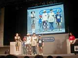
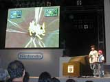
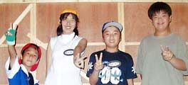

ユーザー参加のイベントで注目なのは、やはりステージ上での対戦でしょう。今年のスペースワールドでも、『ポケットモンスター金・銀』と『ポケットモンスタークリスタル（仮称）』に対応した『ポケモンスタジアム金銀クリスタル（仮称）』（NINTENDO64）のエキシビジョンマッチが３日間に渡って開催されています。まずは初日の８月25日午後のバトルをご紹介しましょう。
 この日のバトルに参加したのは、第３回ポケモンリーグの全国大会、地区大会で優秀な成績を残したトレーナーたち。堀智之くん、松本雪子ちゃん、梶原靖仁くん、塚本健太くんの４人です。４人がステージ上に揃ったところで、ポケモンバトル解説でおなじみのトランセル種市さんが登場。トレーナーが対戦準備をしている間、ルール説明が行われます。
|
さあ、いよいよ対戦です。最初のバトルは堀くんと松本さん。新しいポケモンスタジアムの画面に、トレーナーも見ている人もワクワク。特にポケモンのＣＧが美しい！ バトルも期待できそうです。そんな中、堀くんが繰り出してきたのはサンダース。対する松本さんはヘルガーです。堀くんがサンダースの「10まんボルト」でヘルガーを倒すと、松本さんはハピナスでサンダースを倒します。さらに堀くんのガルーラが松本さんのハピナスを倒し、と両者ゆずらず。しかし、最後には堀くんのヌオーが松本さんのブラッキーを倒して勝利。いい線までいっていただけに、松本さんの敗退はおしまれます。
２回戦は全国大会準優勝の梶原くんと塚本くんのバトル。梶原くんはバリヤードのバリヤで防御力を上げ、カビゴンにバトンタッチするシブ〜い作戦で攻めます。塚本くんはキングドラ、カイリキー、ガラガラで善戦しますが、梶原くんのカビゴンの前におしくも敗れてしまいました。
 さて、いよいよファイナルバトル。１回戦の勝者・堀くんと２回戦の勝者・梶原くんの戦いです。まずは堀くんと梶原くんが固い握手。会場からも盛大な拍手がよせられます。スタートの合図があり、堀くんはサンダースを、梶原くんはヘルガーを繰り出します。堀くんのサンダースが梶原くんのヘルガー、バリヤードを続けて倒し、堀くんの圧勝かと見えましたが、さすがに全国大会出場者の梶原くん。強力なカビゴンで堀くんの２体のポケモンをやぶり、両者最後のポケモンで対決となりました。堀くんのガルーラに必死の応戦をする梶原くんのカビゴン。激しい戦いを続けてきたカビゴンの体力はもうあまり残っていません。その姿に、会場からも応援の拍手が送られます。熱い戦いの末、ファイナルバトルを制したのは堀くんでした。
|
バトルが終わったあとには自然と大きな拍手がわきおこり、みんなの興奮に会場の温度も確実に上がっていたようです。

左から、堀智之くん、松本雪子さん、塚本健太くん、梶原靖仁くん。
|